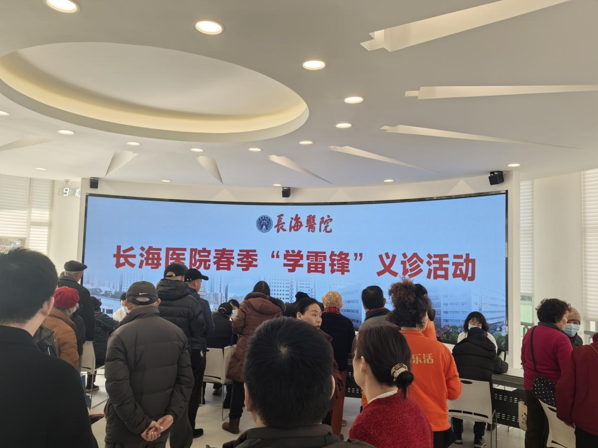
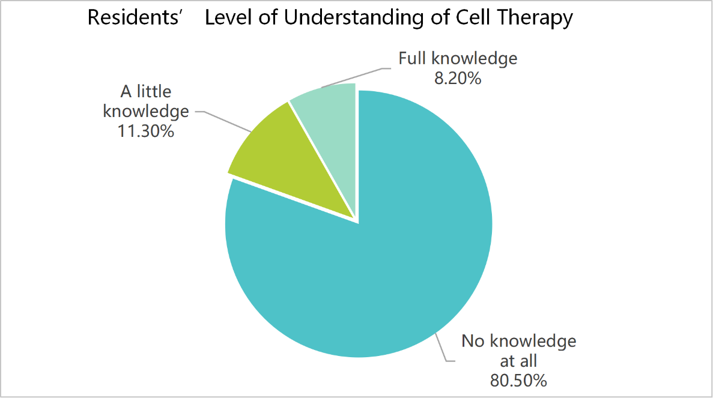
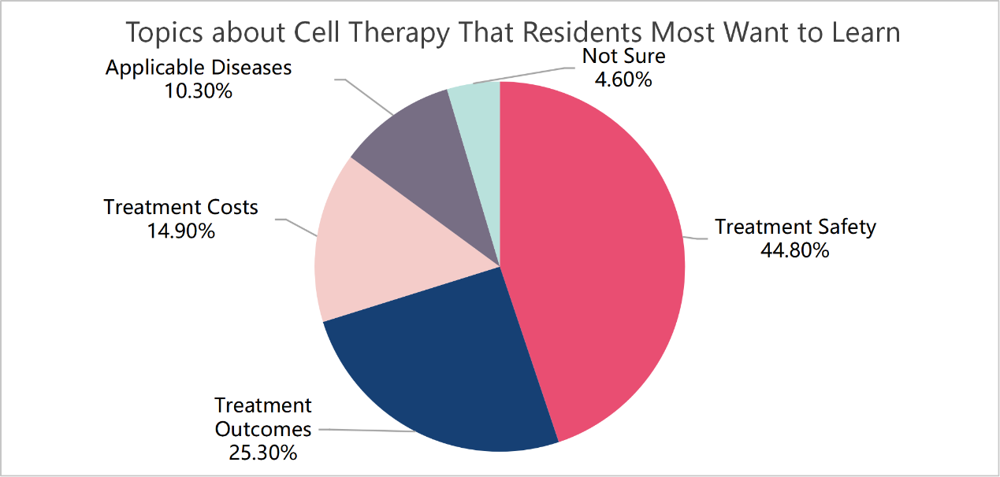
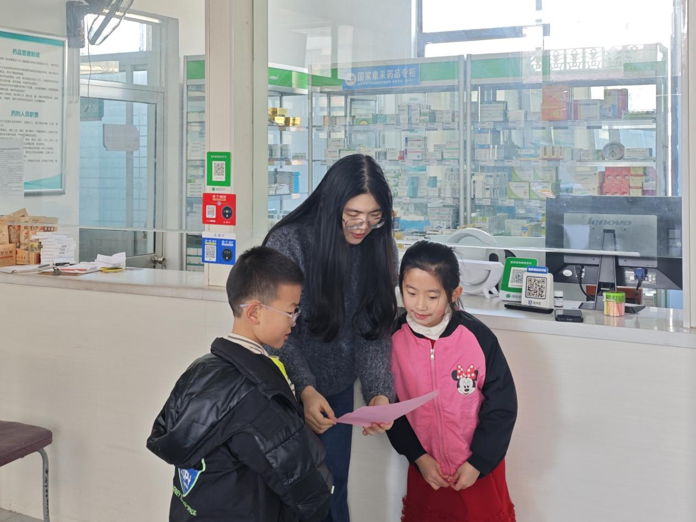
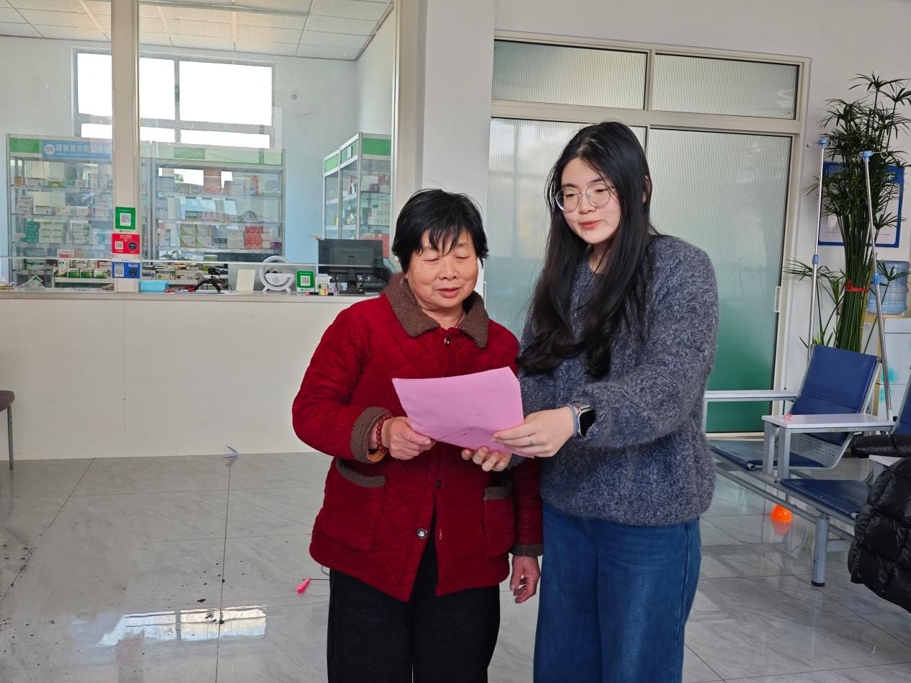
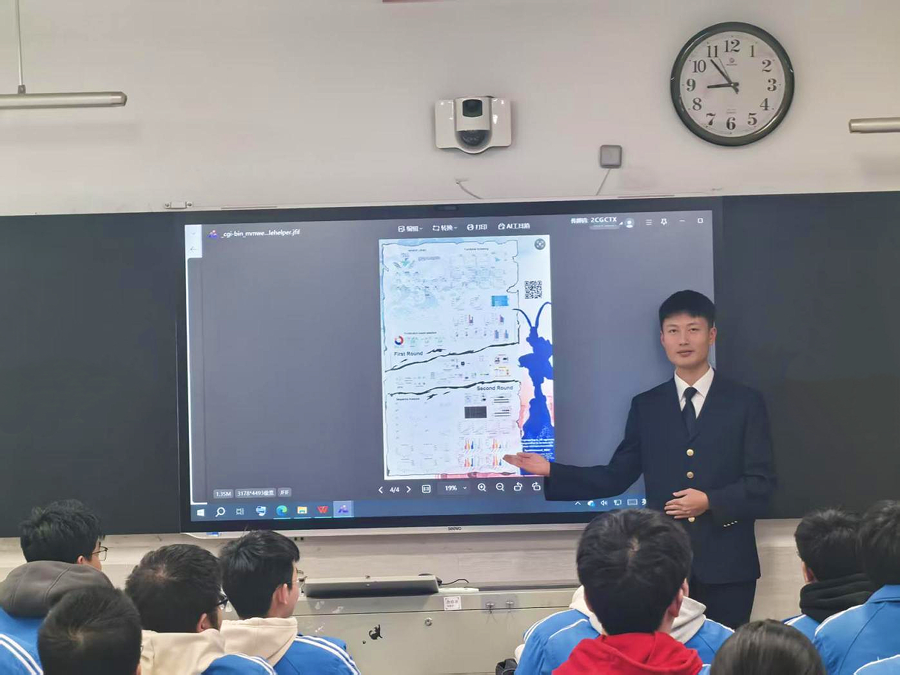
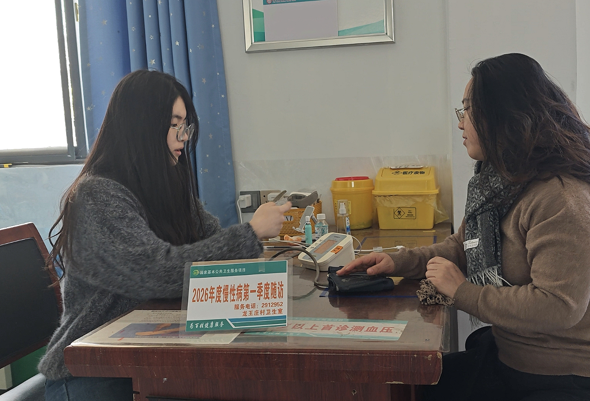
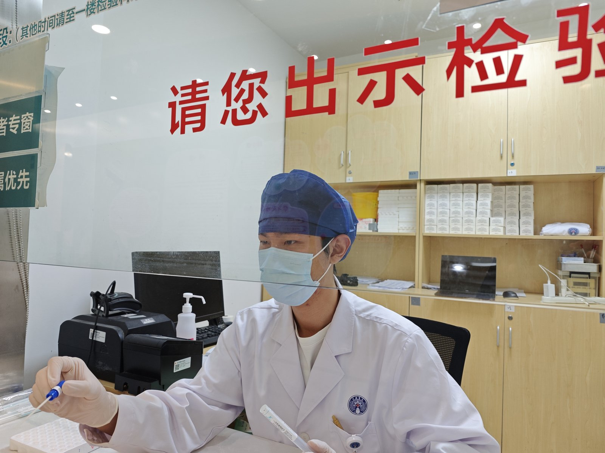
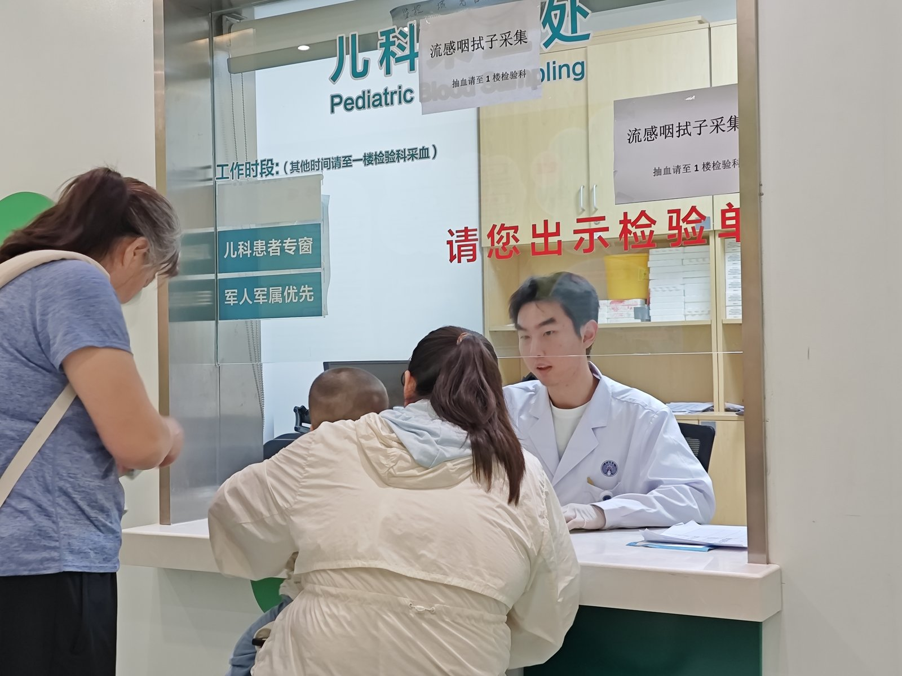

Slide 1
From Understanding the World to Transforming the World In our immunology classes we learned how B cells mutate their antibody genes and are then selected for stronger binding — somatic hypermutation, the process behind antibody affinity maturation. We then asked whether this natural principle could be used in our own research. But research should not stay in the laboratory. As these technologies move closer to patients, the people who may one day receive them need clear, reliable information too. That is why we took this work into the community.
Slide 2
We Saw the Trust Gap in Grassroots Communities Cell therapy is a promising new way for tough diseases, but people in grassroots communities just didn’t trust it. They often heard bad things—sky-high costs, failed cases, and messy wrong information online. No one told them the real science behind it. We knew this fear wasn’t simply from facts, but from an information gap. So we decided to step in, bring the truth to the community, and turn fear into understanding through our winter-to-spring community outreach.

(Free clinic activity during the Spring “Learn from Lei Feng” campaign at Changhai Hospital.)Slide 3
We Listened Closely to What the Community Really Needed We didn’t just talk—we asked first. We did a full survey in the community, made the questions easy to understand, and helped elderly residents and people with low education fill them out one by one. We found that 80.5% of residents had no knowledge at all of cell therapy, while only 8.2% reported full knowledge. We also found that treatment safety was the topic residents most wanted to learn about, accounting for 44.8% of responses. These answers told us exactly what to explain and helped us tailor our science popularization to different groups.

(Residents’ level of understanding of cell therapy based on the questionnaire survey.)
(Topics about cell therapy that residents most wanted to learn about, with treatment safety ranking first.)Slide 4
We Spoke to Everyone in Their Own Way We divided the community into four groups and tailored our talks for each. For patients and their families who needed treatment badly, we chatted one-on-one and talked about safety and recovery with real cases. For elderly neighbors who knew little about the topic, we used simple words, pictures and slow short videos. For young and middle-aged people with basic knowledge, we held lectures and Q&As to sort out their understanding. For school students, we used age-appropriate and engaging science classes to help them become little health messengers for their families. The photos here show representative examples of these audience-focused activities, including rural science popularization for children and elderly residents and an in-school science lecture.

(Science popularization activity for children during a rural free clinic.)
(Science popularization activity for elderly residents during a rural free clinic.)
(Science popularization lecture delivered to students at a school.)Slide 5
We Crafted a Simple Science Plan for the Community Everyone's biggest fear was treatment safety, and cytokine storm was what they worried about most. So we planned out exactly how to explain this medical stuff in an easy way. We'd make it clear that IL-6 is a key factor involved in cytokine storm, and then tell them the real ways to deal with it. Doctors use IL-6 antibody drugs to help control it, and cell therapy technology is always getting better to lower this risk from the very start. We decided to use simple everyday examples, skip all the hard medical words, and keep everything plain and easy to understand. Our goal was to make sure no one was confused and that people could understand the safety concerns they had heard about.
Slide 6
We Brought Warmth and Science This Spring Festival Since the Spring Festival is a time for reunion, warmth and heartfelt traditions, it was a good opportunity to connect with the community. We brought rice, oil and New Year gifts, visited patients' homes door to door, and sent our New Year wishes first. We then set up outreach activities in community spaces and medical settings, including consultation desks, picture boards and one-on-one answer corners, with doctors providing professional support. Right at these activities, we put our simple science plan into practice. We talked about cytokine storm and safety facts with anyone who asked, using the easy everyday examples and plain words we had planned earlier. For people who could receive cell therapy, we shared detailed treatment information and professional advice. At the same time, our broader outreach included rural free-clinic activities that brought health services and science popularization closer to residents with limited medical resources.

(Rural free clinic at Longwangzhuang Village Health Room during the 2026 Q1 chronic-disease follow-up.)Slide 7
We Took This Communication Skill to the Clinical Setting The same need for clear explanation appeared again during our clinical training. At the pediatric sample-collection window of Changhai Hospital, one of us collected throat swabs from children held in their parents’ arms. Mask on, there was little time to talk. After each procedure the mask came off, and he explained to the parent what the sample was for and what would happen next. Many of those parents were as anxious as the residents we had met in the community, and often for the same reason: no one had explained things clearly. Clear communication is not a one-off exercise — it is part of how we intend to practise medicine.

(Mask on: collecting a throat swab from a child at the pediatric window of Changhai Hospital.)
(Mask off, same window: explaining the sampling procedure to the parent.)Slide 8
We'll Keep Standing by the Community for the Long Run This Spring Festival activity wasn’t a one-off. We broke the information wall for grassroots neighbors and let cutting-edge medical knowledge walk into the community. And we’re not stopping here—we’ll keep coming back to the community, do regular science popularization, help areas with poor medical resources, and keep closing the information gap. We believe that, with warmth and professional knowledge, everyone in the community can face diseases with science, not fear, and hold onto every hope for treatment.